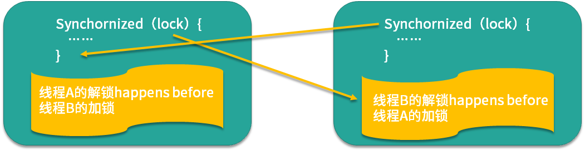
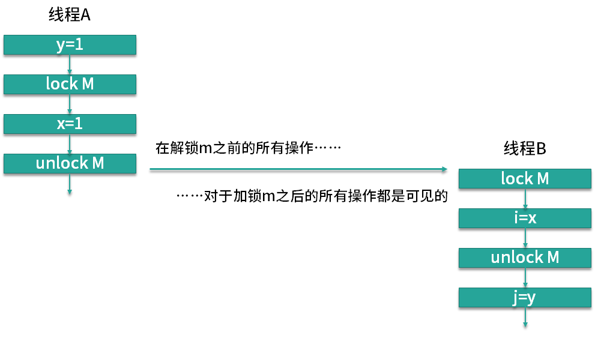

- 00 由点及面，搭建你的 Java 并发知识网.md.html
- 01 为何说只有 1 种实现线程的方法？.md.html
- 02 如何正确停止线程？为什么 volatile 标记位的停止方法是错误的？.md.html
- 03 线程是如何在 6 种状态之间转换的？.md.html
- 04 waitnotifynotifyAll 方法的使用注意事项？.md.html
- 05 有哪几种实现生产者消费者模式的方法？.md.html
- 06 一共有哪 3 类线程安全问题？.md.html
- 07 哪些场景需要额外注意线程安全问题？.md.html
- 08 为什么多线程会带来性能问题？.md.html
- 09 使用线程池比手动创建线程好在哪里？.md.html
- 10 线程池的各个参数的含义？.md.html
- 11 线程池有哪 4 种拒绝策略？.md.html
- 12 有哪 6 种常见的线程池？什么是 Java8 的 ForkJoinPool？.md.html
- 13 线程池常用的阻塞队列有哪些？.md.html
- 14 为什么不应该自动创建线程池？.md.html
- 15 合适的线程数量是多少？CPU 核心数和线程数的关系？.md.html
- 16 如何根据实际需要，定制自己的线程池？.md.html
- 17 如何正确关闭线程池？shutdown 和 shutdownNow 的区别？.md.html
- 18 线程池实现“线程复用”的原理？.md.html
- 19 你知道哪几种锁？分别有什么特点？.md.html
- 20 悲观锁和乐观锁的本质是什么？.md.html
- 21 如何看到 synchronized 背后的“monitor 锁”？.md.html
- 22 synchronized 和 Lock 孰优孰劣，如何选择？.md.html
- 23 Lock 有哪几个常用方法？分别有什么用？.md.html
- 24 讲一讲公平锁和非公平锁，为什么要“非公平”？.md.html
- 25 读写锁 ReadWriteLock 获取锁有哪些规则？.md.html
- 26 读锁应该插队吗？什么是读写锁的升降级？.md.html
- 27 什么是自旋锁？自旋的好处和后果是什么呢？.md.html
- 28 JVM 对锁进行了哪些优化？.md.html
- 29 HashMap 为什么是线程不安全的？.md.html
- 30 ConcurrentHashMap 在 Java7 和 8 有何不同？.md.html
- 31 为什么 Map 桶中超过 8 个才转为红黑树？.md.html
- 32 同样是线程安全，ConcurrentHashMap 和 Hashtable 的区别.md.html
- 33 CopyOnWriteArrayList 有什么特点？.md.html
- 34 什么是阻塞队列？.md.html
- 35 阻塞队列包含哪些常用的方法？add、offer、put 等方法的区别？.md.html
- 36 有哪几种常见的阻塞队列？.md.html
- 37 阻塞和非阻塞队列的并发安全原理是什么？.md.html
- 38 如何选择适合自己的阻塞队列？.md.html
- 39 原子类是如何利用 CAS 保证线程安全的？.md.html
- 40 AtomicInteger 在高并发下性能不好，如何解决？为什么？.md.html
- 41 原子类和 volatile 有什么异同？.md.html
- 42 AtomicInteger 和 synchronized 的异同点？.md.html
- 43 Java 8 中 Adder 和 Accumulator 有什么区别？.md.html
- 44 ThreadLocal 适合用在哪些实际生产的场景中？.md.html
- 45 ThreadLocal 是用来解决共享资源的多线程访问的问题吗？.md.html
- 46 多个 ThreadLocal 在 Thread 中的 threadlocals 里是怎么存储的？.md.html
- 47 内存泄漏——为何每次用完 ThreadLocal 都要调用 remove()？.md.html
- 48 Callable 和 Runnable 的不同？.md.html
- 49 Future 的主要功能是什么？.md.html
- 50 使用 Future 有哪些注意点？Future 产生新的线程了吗？.md.html
- 51 如何利用 CompletableFuture 实现“旅游平台”问题？.md.html
- 52 信号量能被 FixedThreadPool 替代吗？.md.html
- 53 CountDownLatch 是如何安排线程执行顺序的？.md.html
- 54 CyclicBarrier 和 CountdownLatch 有什么异同？.md.html
- 55 Condition、object.wait() 和 notify() 的关系？.md.html
- 56 讲一讲什么是 Java 内存模型？.md.html
- 57 什么是指令重排序？为什么要重排序？.md.html
- 58 Java 中的原子操作有哪些注意事项？.md.html
- 59 什么是“内存可见性”问题？.md.html
- 60 主内存和工作内存的关系？.md.html
- 61 什么是 happens-before 规则？.md.html
- 62 volatile 的作用是什么？与 synchronized 有什么异同？.md.html
- 63 单例模式的双重检查锁模式为什么必须加 volatile？.md.html
- 64 你知道什么是 CAS 吗？.md.html
- 65 CAS 和乐观锁的关系，什么时候会用到 CAS？.md.html
- 66 CAS 有什么缺点？.md.html
- 67 如何写一个必然死锁的例子？.md.html
- 68 发生死锁必须满足哪 4 个条件？.md.html
- 69 如何用命令行和代码定位死锁？.md.html
- 70 有哪些解决死锁问题的策略？.md.html
- 71 讲一讲经典的哲学家就餐问题.md.html
- 72 final 的三种用法是什么？.md.html
- 73 为什么加了 final 却依然无法拥有“不变性”？.md.html
- 74 为什么 String 被设计为是不可变的？.md.html
- 75 为什么需要 AQS？AQS 的作用和重要性是什么？.md.html
- 76 AQS 的内部原理是什么样的？.md.html
- 77 AQS 在 CountDownLatch 等类中的应用原理是什么？.md.html
- 78 一份独家的 Java 并发工具图谱.md.html
22 synchronized 和 Lock 孰优孰劣，如何选择？
本课时我们主要学习 synchronized 和 Lock 的异同点，以及该如何选择。
相同点
synchronized 和 Lock 的相同点非常多，我们这里重点讲解 3 个比较大的相同点。
- synchronized 和 Lock 都是用来保护资源线程安全的。
这一点毋庸置疑，这是它们的基本作用。
- 都可以保证可见性。
对于 synchronized 而言，线程 A 在进入 synchronized 块之前或在 synchronized 块内进行操作，对于后续的获得同一个 monitor 锁的线程 B 是可见的，也就是线程 B 是可以看到线程 A 之前的操作的，这也体现了 happens-before 针对 synchronized 的一个原则。

而对于 Lock 而言，它和 synchronized 是一样，都可以保证可见性，如图所示，在解锁之前的所有操作对加锁之后的所有操作都是可见的。

如果你之前不了解什么是可见性，此时理解可能会有一定的困难，可以在学习本专栏的 Java 内存模型相关内容后，再复习本课时，就会豁然开朗。
- synchronized 和 ReentrantLock 都拥有可重入的特点。
这里的 ReentrantLock 是 Lock 接口的一个最主要的实现类，在对比 synchronized 和 Lock 的时候，也会选择 Lock 的主要实现类来进行对比。可重入指的是某个线程如果已经获得了一个锁，现在试图再次请求这个它已经获得的锁，如果它无需提前释放这个锁，而是直接可以继续使用持有的这个锁，那么就是可重入的。如果必须释放锁后才能再次申请这个锁，就是不可重入的。而 synchronized 和 ReentrantLock 都具有可重入的特性。
不同点
下面我们来看下 synchronized 和 Lock 的区别，和相同点一样，它们之间也有非常多的区别，这里讲解其中比较大的 7 点不同。
- 用法区别
synchronized 关键字可以加在方法上，不需要指定锁对象（此时的锁对象为 this），也可以新建一个同步代码块并且自定义 monitor 锁对象；而 Lock 接口必须显示用 Lock 锁对象开始加锁 lock() 和解锁 unlock()，并且一般会在 finally 块中确保用 unlock() 来解锁，以防发生死锁。
与 Lock 显式的加锁和解锁不同的是 synchronized 的加解锁是隐式的，尤其是抛异常的时候也能保证释放锁，但是 Java 代码中并没有相关的体现。
- 加解锁顺序不同
对于 Lock 而言如果有多把 Lock 锁，Lock 可以不完全按照加锁的反序解锁，比如我们可以先获取 Lock1 锁，再获取 Lock2 锁，解锁时则先解锁 Lock1，再解锁 Lock2，加解锁有一定的灵活度，如代码所示。
lock1.lock();
lock2.lock();
...
lock1.unlock();
lock2.unlock();
但是 synchronized 无法做到，synchronized 解锁的顺序和加锁的顺序必须完全相反，例如：
synchronized(obj1){
synchronized(obj2){
...
}
}
那么在这里，顺序就是先对 obj1 加锁，然后对 obj2 加锁，然后对 obj2 解锁，最后解锁 obj1。这是因为 synchronized 加解锁是由 JVM 实现的，在执行完 synchronized 块后会自动解锁，所以会按照 synchronized 的嵌套顺序加解锁，不能自行控制。
- synchronized 锁不够灵活
一旦 synchronized 锁已经被某个线程获得了，此时其他线程如果还想获得，那它只能被阻塞，直到持有锁的线程运行完毕或者发生异常从而释放这个锁。如果持有锁的线程持有很长时间才释放，那么整个程序的运行效率就会降低，而且如果持有锁的线程永远不释放锁，那么尝试获取锁的线程只能永远等下去。
相比之下，Lock 类在等锁的过程中，如果使用的是 lockInterruptibly 方法，那么如果觉得等待的时间太长了不想再继续等待，可以中断退出，也可以用 tryLock() 等方法尝试获取锁，如果获取不到锁也可以做别的事，更加灵活。
- synchronized 锁只能同时被一个线程拥有，但是 Lock 锁没有这个限制
例如在读写锁中的读锁，是可以同时被多个线程持有的，可是 synchronized 做不到。
- 原理区别 synchronized 是内置锁，由 JVM 实现获取锁和释放锁的原理，还分为偏向锁、轻量级锁、重量级锁。
Lock 根据实现不同，有不同的原理，例如 ReentrantLock 内部是通过 AQS 来获取和释放锁的。
- 是否可以设置公平/非公平
公平锁是指多个线程在等待同一个锁时，根据先来后到的原则依次获得锁。ReentrantLock 等 Lock 实现类可以根据自己的需要来设置公平或非公平，synchronized 则不能设置。
- 性能区别
在 Java 5 以及之前，synchronized 的性能比较低，但是到了 Java 6 以后，发生了变化，因为 JDK 对 synchronized 进行了很多优化，比如自适应自旋、锁消除、锁粗化、轻量级锁、偏向锁等，所以后期的 Java 版本里的 synchronized 的性能并不比 Lock 差。
如何选择
讲完了 synchronized 和 Lock 的相同点和区别，最后我们再来看下如何选择它们，在 Java 并发编程实战和 Java 核心技术里都认为：
- 如果能不用最好既不使用 Lock 也不使用 synchronized。因为在许多情况下你可以使用 java.util.concurrent 包中的机制，它会为你处理所有的加锁和解锁操作，也就是推荐优先使用工具类来加解锁。
- 如果 synchronized 关键字适合你的程序， 那么请尽量使用它，这样可以减少编写代码的数量，减少出错的概率。因为一旦忘记在 finally 里 unlock，代码可能会出很大的问题，而使用 synchronized 更安全。
- 如果特别需要 Lock 的特殊功能，比如尝试获取锁、可中断、超时功能等，才使用 Lock。